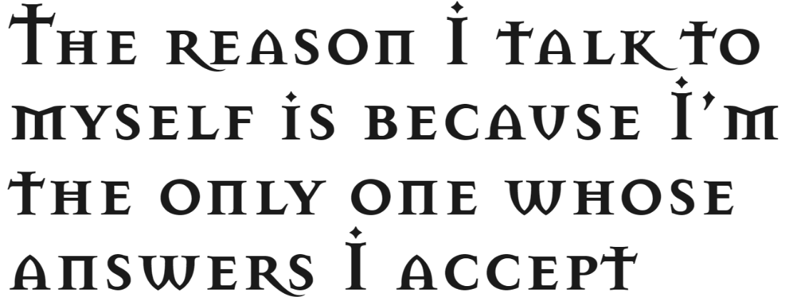

- 폰트

- Exocet Light
- Exocet Medium
- Exocet Heavy
- Mason Sans Regular
- Mason Sans Regular: Stylistic Alternates
- Mason Sans Bold

- Mason Sans Bold: Stylistic Alternates
- Mason Serif Regular
- Mason Serif Regular: Stylistic Alternates
- Mason Serif Bold
- 
- Mason Serif Bold: Stylistic Alternates